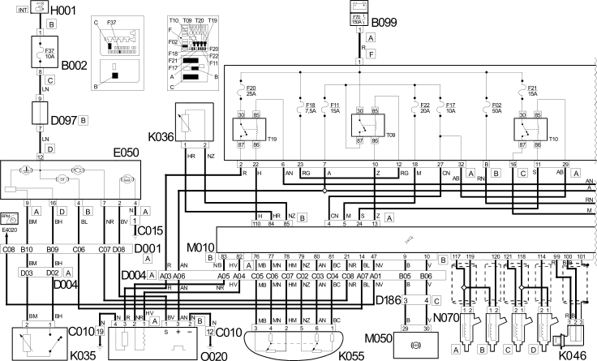
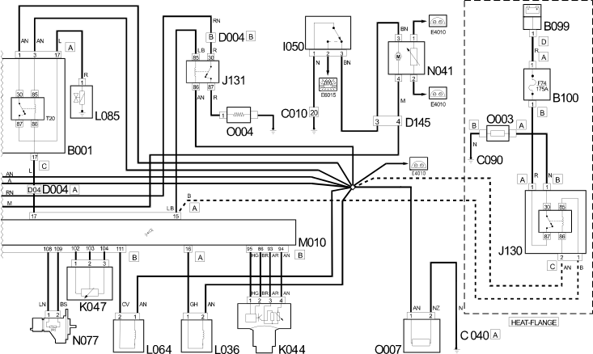

E5050 DIESEL ENGINE ELECTRONIC MANAGEMENT WIRING DIAGRAM
- Path
- Electrical equipment > 1 ELECTRICAL FUNCTIONS > E50 ENGINE CONTROL AND MANAGEMENT SYSTEMS > E5050 DIESEL ENGINES ELECTRONIC MANAGEMENT > E5050 DIESEL ENGINE ELECTRONIC MANAGEMENT WIRING DIAGRAM
- Kind
- topic
- Applies to
- engines: 2.8 JTD 8V; all production periods
- Interactive page
- https://sloeber94.github.io/elrnDB-fDct/en/#/244002589
Applies to: engines: 2.8 JTD 8V; all production periods
Wiring Diagram


Components
Component code | Description | Reference to the assembly |
|---|---|---|
JUNCTION UNIT | ||
JUNCTION UNIT UNDER DASHBOARD | - | |
MAXI FUSE BOX ON BATTERY | - | |
HEAT FLANGE FUSE | - | |
LEFT FRONT EARTH | - | |
ENGINE EARTH | - | |
HEAT FLANGE EARTH | - | |
FRONT/DASHBOARD COUPLING | - | |
FRONT/ENGINE COUPLING | - | |
SHORT CIRCUITING COUPLING | - | |
FRONT/CILC (FUEL LEVEL GAUGE CIRCUIT) COUPLING | - | |
FRONT/ABS COUPLING | - | |
INSTRUMENT PANEL | ||
IGNITION SWITCH | ||
INERTIA SWITCH | ||
HEAT - FLANGE RELAY | - | |
THERMAL STARTER RELAY | - | |
ENGINE OIL LEVEL SENSOR | ||
DO NOT USE SENDER UNIT | - | |
ENGINE COOLANT TEMPERATURE SENSOR/SENDER UNIT | - | |
AIR PRESSURE - TEMPERATURE SENSOR | - | |
RPM SENSOR | - | |
TIMING SENSOR | - | |
ACCELERATOR PEDAL POTENTIOMETER | - | |
TURBINE VARIABLE GEOMETRY CONTROL SOLENOID VALVE | - | |
INJECTION PUMP THIRD PISTON DEACTIVATION SOLENOID VALVE | - | |
ENGINE MANAGEMENT ECU | - | |
ABS CONTROL UNIT | - | |
FUEL PUMP AND EPIC LEVEL GAUGE | ||
INJECTOR | ||
HEAT - FLANGE | - | |
THERMAL STARTER RESISTANCE | - | |
OIL VAPOUR HEATING RESISTANCE | - | |
Diesel heating resistance | - |
Topics linked from this page (40)
- 1040A FUEL TANK AND COMPONENTS
- 1060F INJECTORS AND LINES
- 1084A INDICATORS/CHECK DEVICES
- 5505A MULTI-FUNCTION COMPONENTS
- 5520A IGNITION SWITCH
- 5560B ANALOGUE CONTROL PANEL
- B001 JUNCTION UNIT
- B002 JUNCTION UNIT UNDER DASHBOARD
- B099 MAXI FUSE BOX ON BATTERY
- B100 HEAT FLANGE FUSE
- C010 LEFT FRONT EARTH
- C040 ENGINE EARTH
- C090 HEAT FLANGE EARTH
- D001 FRONT/DASHBOARD COUPLING
- D004 FRONT/ENGINE COUPLING
- D097 SHORT CIRCUITING COUPLING
- D145 FRONT/CILC (FUEL LEVEL GAUGE CIRCUIT) COUPLING
- D186 FRONT/ABS COUPLING
- E050 INSTRUMENT PANEL
- H001 IGNITION SWITCH
- I050 INERTIA SWITCH
- J130 HEAT - FLANGE RELAY
- J131 THERMAL STARTER RELAY
- K032 ENGINE OIL LEVEL SENSOR
- K035 DO NOT USE SENDER UNIT
- K036 ENGINE COOLANT TEMPERATURE SENSOR/SENDER UNIT
- K044 AIR PRESSURE - TEMPERATURE SENSOR
- K046 RPM SENSOR
- K047 TIMING SENSOR
- K055 ACCELERATOR PEDAL POTENTIOMETER
- L036 TURBINE VARIABLE GEOMETRY CONTROL SOLENOID VALVE
- L085 INJECTION PUMP THIRD PISTON DEACTIVATION SOLENOID VALVE
- M010 ENGINE MANAGEMENT ECU
- M050 ABS CONTROL UNIT
- N041 FUEL PUMP AND EPIC LEVEL GAUGE
- N070 INJECTOR
- O003 HEAT - FLANGE
- O004 THERMAL STARTER RESISTANCE
- O007 OIL VAPOUR HEATING RESISTANCE
- O020 Diesel heating resistance